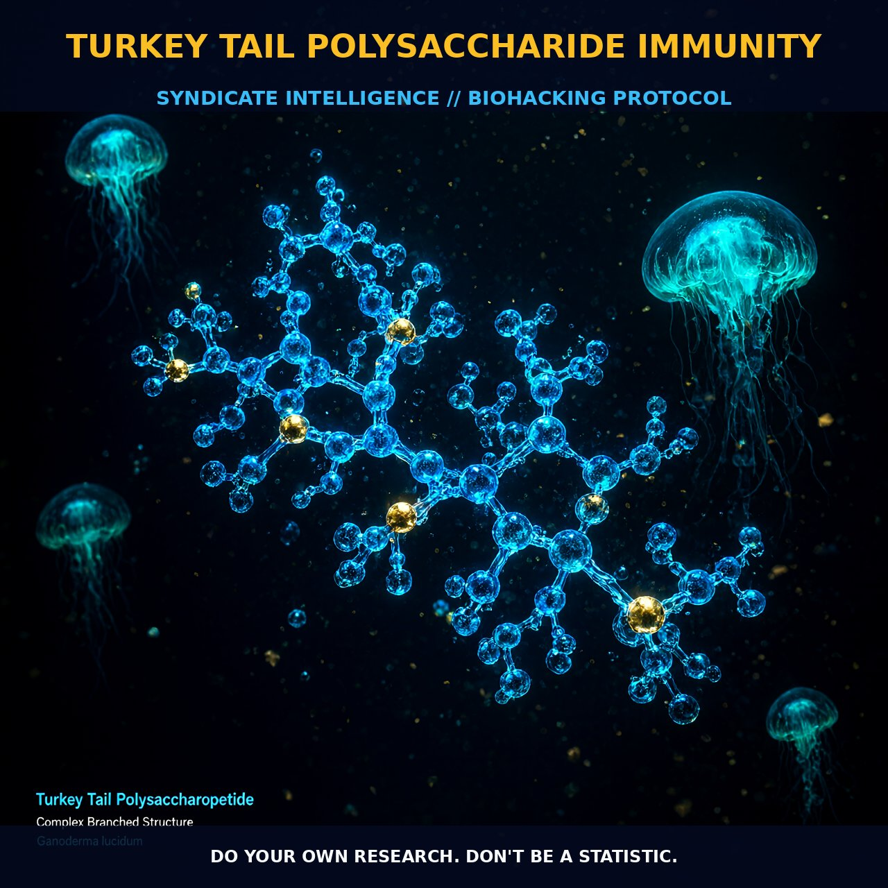

Turkey Tail Polysaccharide: Enhancing Immune Function and Combating

1. The Mechanism
Turkey Tail Polysaccharide (Trametes versicolor) is a rich source of biologically active compounds, particularly β-glucans and other polysaccharides, which exhibit a range of immunomodulatory effects. The primary mechanism of action involves the activation of immune cells such as macrophages, natural killer (NK) cells, and T and B lymphocytes. These immune cells play a critical role in mounting an effective defense against pathogens and tumors.
β-glucans, the main active components, interact with specific receptors on immune cells, such as Dectin-1 and CR3, triggering a cascade of intracellular signaling pathways. This interaction leads to the activation of immune cell functions, including phagocytosis, cytokine production, and the release of reactive oxygen species like nitric oxide (NO) and tumor necrosis factor (TNF-α).
The immune response is further enhanced through the upregulation of interleukins (IL-1β, IL-6), interferons (IFN-γ), and the induction of natural killer cells and T and B lymphocytes. These immune modulations support the body's innate and adaptive immune responses, enhancing overall immune surveillance and defense mechanisms.
The polysaccharides in Turkey Tail also exert anti-inflammatory effects by modulating cytokine profiles and reducing the production of pro-inflammatory cytokines. This dual action—enhancing immune activity while dampening excessive inflammation—creates a balanced immune response that is particularly beneficial in chronic conditions.
Additionally, Turkey Tail polysaccharides may exert direct antitumor effects by inhibiting tumor growth and promoting apoptosis in cancer cells. The mechanisms underlying these effects include the activation of immune cells to produce tumor necrosis factor and the modulation of immune checkpoint pathways such as programmed death-1 (PD-1) and programmed death-ligand 1 (PD-L1).
2. Biological Leverage
Turkey Tail polysaccharides provide significant biological leverage by enhancing the immune system's capacity to combat various diseases, including gastric cancer. Studies indicate that these polysaccharides can improve immune function, particularly in individuals with compromised immune systems, such as those undergoing cancer treatment or suffering from chronic infections.
The immune-enhancing effects of Turkey Tail polysaccharides are particularly notable in patients with gastric cancer, where they have shown promise in improving overall survival rates. For instance, PSK (a polysaccharide extract from Turkey Tail) has been shown to improve antitumor immune abilities by modulating immune systems, leading to better survival outcomes for patients with negative PD-L1 expression.
This modulation of immune function is crucial in the context of gastric cancer, where the immune system plays a pivotal role in tumor surveillance and elimination. Furthermore, Turkey Tail polysaccharides have exhibited antitumor activity through growth inhibition and induction of apoptosis in cancer cells. This is supported by the polysaccharides' ability to activate immune cells to produce cytokines and reactive oxygen species, which contribute to tumor cell death.
The polysaccharides also enhance immune surveillance by promoting the activation of NK cells and T and B lymphocytes, which are critical for recognizing and destroying cancer cells. In addition to their direct antitumor effects, Turkey Tail polysaccharides have shown potential in reducing inflammation and oxidative stress, conditions that are often associated with cancer progression.
3. Tactical Implementation
To effectively implement Turkey Tail polysaccharides in your regimen, it is crucial to understand the dosing and timing of administration. Low-to-moderate amounts of Turkey Tail polysaccharides are generally well-tolerated and can be administered daily. A common approach is to take 1-2 grams of a high-quality Turkey Tail extract, either in capsule or powder form, with meals.
This timing ensures that the polysaccharides are absorbed and utilized by the digestive system, enhancing their bioavailability and effectiveness. Additionally, incorporating Turkey Tail polysaccharides into a regimen that includes other immune-supportive compounds such as vitamin C, zinc, and echinacea can further enhance immune function and provide a synergistic effect.
When stacking Turkey Tail polysaccharides with other supplements, it is important to consider the timing and potential interactions. For example, combining Turkey Tail with vitamin C can enhance the immune-boosting effects, as both work synergistically to support immune cell function. Timing the intake of Turkey Tail polysaccharides with meals can also help mitigate any potential digestive discomfort and optimize absorption.
However, individual responses may vary, so it is advisable to start with lower doses and gradually increase to assess tolerance and efficacy. This approach allows for personalized adjustments based on individual needs and responses, ensuring that the full benefits of Turkey Tail polysaccharides are realized without compromising overall health.
Prostar Life Hack
Start with a low-to-moderate dose of 1-2 grams of Turkey Tail polysaccharide extract daily, taken with meals. Combine with immune-supportive compounds like vitamin C for enhanced efficacy.
[ AUTHOR: LEAD TECHNICAL RESEARCHER ]